文字
背景
行間


校長花ごよみ
小正月に思う
１月15日は、20年前の1999年までは成人の日であり、国民の祝日として行事が行われていました。2000年からは、ハッピーマンデー制度導入に伴い1月第2月曜日、つまり、その年の1月8日から14日までのうち月曜日に該当する日に変更されました。今年は昨日が成人の日でした。また、成人年齢を20歳から18歳に引き下げる改正民法が昨年6月13日に参院本会議で可決、成立し施行は2022年4月1日です。これに伴い2022年度の成人式はどのように行われるのか話題になっていたのはつい最近ですね。時が経つのは早いもので、お正月の行事が一区切りとなるのがこの小正月です。そんなことを朝、小豆粥を食べながら考えていました。さて、話は変わりますが、この3連休中も、生徒はそれぞれの目標達成のために努力するとともに、実力を発揮して活躍をしてくれています。ラグビー部は、1月12日（土）に東京学館浦安高校に３２−１２で勝ち県ベスト８になりました。1月19日（土）に八千代松陰高校とベスト４をかけて天台スポーツセンターで対戦します。応援よろしくお願いします。男子バスケットボール部は県大会でベスト16に入り、男子バレー部も地区予選を勝ち上がり2月に行われる県大会への出場を決めるなど良く頑張っています。本当にすばらしい。
なお、この1月19日、20日は、いよいよ大学入試センター試験が行われます。3年生は今まで培ってきた実力を十二分に発揮できるよう健康に気を付け自分を信じて試験に臨んでほしいと思います。
なお、この1月19日、20日は、いよいよ大学入試センター試験が行われます。3年生は今まで培ってきた実力を十二分に発揮できるよう健康に気を付け自分を信じて試験に臨んでほしいと思います。
氷結
 東郷池の水を濾過するために水を循環させていますが、どうしても池の表面で流れが緩やかな部分があり、このところの寒気の強まりでせいで、池の表面の3分の１が氷結しました。(左写真)ちなみに佐倉高校周辺の早朝の気温は、マイナス３℃でした。また、このところ１７日間連続で雨が降っていないこともあり、乾燥注意報が継続して出されています。空気が乾燥すると、のどの粘膜の防御機能が低下し、インフルエンザにかかりやすくなるので手洗いや適度に水分を補給することが重要です。また、体のウイルスへの抵抗力を高めるために、十分な休養とバランスのとれた栄養摂取を日ごろから心がけましょう。あと、免疫力を高めるために腸内環境を整えることが大切です。そのためにも食べ物に気をつけるだけでなくお腹を冷やさないようにしましょう。みんなでこの冬を元気に乗り越えましょう。
東郷池の水を濾過するために水を循環させていますが、どうしても池の表面で流れが緩やかな部分があり、このところの寒気の強まりでせいで、池の表面の3分の１が氷結しました。(左写真)ちなみに佐倉高校周辺の早朝の気温は、マイナス３℃でした。また、このところ１７日間連続で雨が降っていないこともあり、乾燥注意報が継続して出されています。空気が乾燥すると、のどの粘膜の防御機能が低下し、インフルエンザにかかりやすくなるので手洗いや適度に水分を補給することが重要です。また、体のウイルスへの抵抗力を高めるために、十分な休養とバランスのとれた栄養摂取を日ごろから心がけましょう。あと、免疫力を高めるために腸内環境を整えることが大切です。そのためにも食べ物に気をつけるだけでなくお腹を冷やさないようにしましょう。みんなでこの冬を元気に乗り越えましょう。 春の七草
七草（ななくさ）は、人日の節句（1月7日）の朝に、7種の野草あるいは野菜が入った粥（七草粥)を食べる風習のこと。七草粥は新年の無病息災・豊年を願っていただくわけですがお正月に御節料理で疲れた胃腸にやさしく、冬に不足しがちな栄養を野菜から摂れるということで体調を整える意味でも良いとされています。ちなみに、歴史や地方によって多少異なるようですが、一般的に春の七草とは「芹（せり）、薺（なづな）、御形（ごぎょう）、繁縷（はこべら）、仏座（ほとけのざ）、菘（すずな）、蘿蔔（すずしろ）」の七種の植物を言います。
小寒
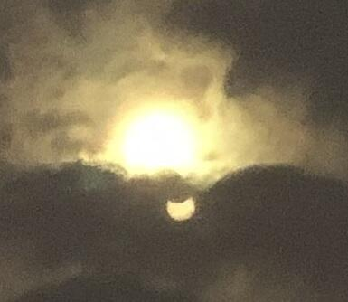 今年の１月６日は「小寒」で「寒の入り」となります。寒（かん）とは、暦の上で寒さが最も厳しいとされる期間のことで小寒から立春の日の前日までの約30日間を言います。また、小寒とは、「しょうかん」と読み、二十四節気（にじゅうしせっき）の第23節目です。小寒は、太陽暦の1月6日ごろに始り、大寒（1月20日ごろ）の前日までの約15日間、またはこの期間の第1日目を指します。
また、今日は3年ぶり（前回は2016年3月9日）の部分日食で、全国で天候が良ければ観測できます。今年は部分日食の観測の機会が2回あるそうで、２回目は12月26日だそうです。東京近辺では１０：０６くらいが食の最大になります。（部分日食についてや安全な観測の仕方について詳しくは国立天文台のWebページでご確認ください。）
左の写真は、部分日食を撮ろうとレンズにフィルターを付けて、外で９：００から雲の切れ間を狙っていたところ、９：４５に雲が偶然切れた瞬間に撮れたものです。
明日から学校が始まります。お正月の間に養った鋭気で、皆で目標の実現に向けて、健やかに、朗らかにいきましょう。
また、今日は3年ぶり（前回は2016年3月9日）の部分日食で、全国で天候が良ければ観測できます。今年は部分日食の観測の機会が2回あるそうで、２回目は12月26日だそうです。東京近辺では１０：０６くらいが食の最大になります。（部分日食についてや安全な観測の仕方について詳しくは国立天文台のWebページでご確認ください。）
左の写真は、部分日食を撮ろうとレンズにフィルターを付けて、外で９：００から雲の切れ間を狙っていたところ、９：４５に雲が偶然切れた瞬間に撮れたものです。
明日から学校が始まります。お正月の間に養った鋭気で、皆で目標の実現に向けて、健やかに、朗らかにいきましょう。
御用始め
 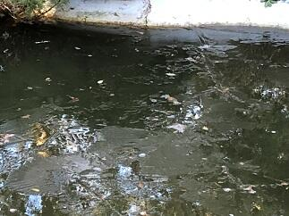
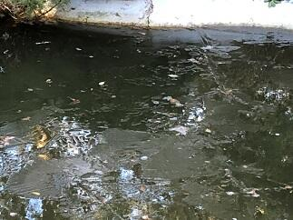 今日は、佐倉は朝からとても寒くて通勤で学校に歩いている途中は目と耳が痛かったです。（凍っちゃうんじゃないかと思うほど）
今日は、佐倉は朝からとても寒くて通勤で学校に歩いている途中は目と耳が痛かったです。（凍っちゃうんじゃないかと思うほど）案の定、気温は氷点下だったようで東郷池も凍っていました。寒の入りが近いので朝晩の寒さが一段と厳しくなっているようです。特に室内と外の寒暖差が激しいので皆さんも健康に気を付けてお過ごしください。
初詣（合格祈願）


 昨日、今日と風もなく、暖かな日差しに恵まれ初詣にはとても良い天気になりました。私は、昨日は地元や県内の神社仏閣にお参りをし、今日はちょっと足を延ばして、東京の湯島天満宮（湯島天神）に佐倉高校の受験生の合格祈願に行ってきました。本殿にあがって合格祈願ができて良かったです。さすがに日本有数の天神様だけあって、多くの参拝者で賑わってました。受験生の皆さんは、試験で実力を発揮できるように健康に気を付けて頑張ってください。
昨日、今日と風もなく、暖かな日差しに恵まれ初詣にはとても良い天気になりました。私は、昨日は地元や県内の神社仏閣にお参りをし、今日はちょっと足を延ばして、東京の湯島天満宮（湯島天神）に佐倉高校の受験生の合格祈願に行ってきました。本殿にあがって合格祈願ができて良かったです。さすがに日本有数の天神様だけあって、多くの参拝者で賑わってました。受験生の皆さんは、試験で実力を発揮できるように健康に気を付けて頑張ってください。 謹賀新年（平成31年元旦）
 新年あけましておめでとうございます。今年もどうそよろしくお願いいたします。今年は平成31 己亥（つちのと・い）年です。しっかりと力をつけて次のステージに向けて頑張っていきましょう。
新年あけましておめでとうございます。今年もどうそよろしくお願いいたします。今年は平成31 己亥（つちのと・い）年です。しっかりと力をつけて次のステージに向けて頑張っていきましょう。 冬至
２０１８年12月22日の今日は、二十四節気の「冬至」の初日にも当たり、昼の時間が一年で一番短い日です。言い換えると夏至以来北半球から遠ざかり続けた太陽が南回帰線を折り返して、北半球に再び帰ってくる日です。この日を易では、陰暦10月に陰がきわまって11月の冬至に陽が初めて生じることから一陽来復(陽気が復活する時)としています。ですから、冬至にはいろいろな風習が受け継がれています。たとえば、「かぼちゃ」を食べるとか。 むかしは、作物が取れなくなる冬のこの時期に保存が利くかぼちゃはとても貴重でした。また、かぼちゃは栄養価が高く、食べれば身体が温まることを昔の人は経験から知っていました。厳しい冬を健康に乗り切れるように願いを込めてこの日にかぼちゃを食していたのでしょう。他にもいろいろ冬至に食べるといいとされる食べ物があります。だいこん、れんこん、にんじん、ぎんなん、かんてんなど「ん」がつくものなど、これらの食べ物は語呂がよく縁起のいい食べ物として取り入れられてきました。食物以外でも、「ゆず湯」につかり風邪予防するなどの風習がありますよね。いずれにしても、これら先人から受け継がれてきた知恵も活用して、みんなで、この冬を乗り切って明るい春を迎えましょう。
憩いのお菓子
 ２EFGの家庭基礎研究を受講している生徒さんたちが、今日はお饅頭を作って来てくれました。いつもありがとうございます。きめ細かくしっとりした餡と皮のほんのりした甘さとのバランスが絶妙で出来栄えは、すばらしいものでした。よく見るとおまんじゅうはそのフォルムがシンプルでかわいらしいですね。生徒さんの作品のすばらしさが伝わる表現と写真が撮れているか心配ですが感謝を込めて今回も載せさていただきました。
２EFGの家庭基礎研究を受講している生徒さんたちが、今日はお饅頭を作って来てくれました。いつもありがとうございます。きめ細かくしっとりした餡と皮のほんのりした甘さとのバランスが絶妙で出来栄えは、すばらしいものでした。よく見るとおまんじゅうはそのフォルムがシンプルでかわいらしいですね。生徒さんの作品のすばらしさが伝わる表現と写真が撮れているか心配ですが感謝を込めて今回も載せさていただきました。 21世紀枠への感謝
先週14日金曜日に来春の第91回センバツ高校野球大会に出場する21世紀枠の各地区候補９校が発表されました。千葉県が所属する関東・東京地区からは、石岡一（茨城県）が選出されました。今回、本校は選外となりましたが、千葉県の代表として推薦していただいたこと、また、本件についてご支援・ご声援いただいた皆様に改めて感謝申し上げます。
15日付けのスポーツ報知の紙面でもこの件に関して記事が掲載されました。そこには、野球部の和田宗矩主将から「自分たちが活躍することで、長嶋さんに元気になってもらいたい。甲子園に出て、長嶋さんに応援に来ていただきたいです。」との来夏の目標に対するコメントが載せられていました。本校生徒が様々な目標を立てる上で、人のため社会のためになることを意識して自分の目標をしっかりと持っていることに頼もしさと誇りを感じました。皆さんと夢の実現に向けてひとつひとつ頑張っていきたいと思います。
15日付けのスポーツ報知の紙面でもこの件に関して記事が掲載されました。そこには、野球部の和田宗矩主将から「自分たちが活躍することで、長嶋さんに元気になってもらいたい。甲子園に出て、長嶋さんに応援に来ていただきたいです。」との来夏の目標に対するコメントが載せられていました。本校生徒が様々な目標を立てる上で、人のため社会のためになることを意識して自分の目標をしっかりと持っていることに頼もしさと誇りを感じました。皆さんと夢の実現に向けてひとつひとつ頑張っていきたいと思います。
気持ちの良い朝
久しぶりに晴れて気持ちの良い朝を迎えました。昨日のニュースでも南関東では日照不足が心配されています。日光や紫外線は、心や身体の健康管理にとても大切です。例えば、感情のバランスを調整する働きや体内時計の調整の働き持つ神経伝達物質のセロトニンや血中のカルシウム代謝を正常化させる働きを持つビタミンDの生成などに密接な関係があります。今日のように朝日を浴びて気持ち良いと感じるのもこんなことにも関係しているのかもしれませんね。


星に願いを2018
今年も「三大流星群」の一つの「ふたご座流星群」を観察できる時期になっています。国立天文台によると、特に多くの流星を見ることができるのは、今日13日の夜と14日の夜の２夜で、今年のふたご座流星群の活動が最も活発になるのは、12月14日21時頃と予想されています。天気予報では13日、14日とも夜は晴れで観察には大変良いようです。観察には月明りが気になりますが月が上弦のため夜半頃には沈み（千葉県では13日が21:40、14日が22:36）、その後はたいへん良い条件で流星を観察することができるでしょう。いずれの夜も、20時頃から流星が出現し始め、夜明け前まで出現が続くそうです。空の暗い場所で観察したときに見える流星の数は、最も多いときで1時間あたり40個程度と予想されるということです。楽しみですね。
さて、あなたは流れ星に何を願いますか。
さて、あなたは流れ星に何を願いますか。
初氷
今日は、また一段と寒さが厳しくなりました。(早朝の気温は１℃でした。)天気予報では午後から、冬将軍の影響で北関東から東京にかけて雪やみぞれが予想されています。
この季節は空気の乾燥や、急激な温度変化（暖かい室内から寒い室外への移動時など）への対策をして、風邪・インフルエンザなどにかからないように健康管理に注意していきましょう。
 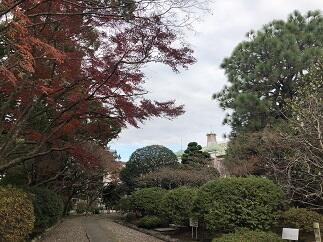
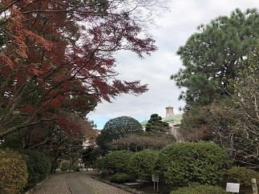
本校では、外の水たまりに今年初めて氷が張りました。（写真左は紅葉を取り込んだ初氷）庭の景色は、あんなに美しかった紅葉も一部を除いて冬枯れの佇まいとなり（写真中央）、東郷池（写真右は校舎が映る東郷池）の鯉たちは、最近はすっかり活動が鈍くなり水面近くに姿を見せなくなりました。自然は私たちに秋を惜しみつつも確実に冬の装いを見せ始めています。
この季節は空気の乾燥や、急激な温度変化（暖かい室内から寒い室外への移動時など）への対策をして、風邪・インフルエンザなどにかからないように健康管理に注意していきましょう。
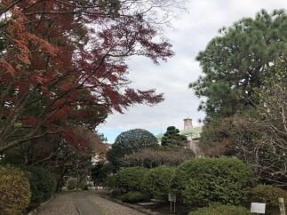本校では、外の水たまりに今年初めて氷が張りました。（写真左は紅葉を取り込んだ初氷）庭の景色は、あんなに美しかった紅葉も一部を除いて冬枯れの佇まいとなり（写真中央）、東郷池（写真右は校舎が映る東郷池）の鯉たちは、最近はすっかり活動が鈍くなり水面近くに姿を見せなくなりました。自然は私たちに秋を惜しみつつも確実に冬の装いを見せ始めています。
落葉舞い散る東郷池
いよいよ、紅葉が落葉になって地面や水面を美しく彩る季節となりました。見上げていた視線を足元に落として、その美しさに感動する一方で、掃除をする大変さに思いがめぐります。自然のなかで、たとえば山のなかに生える紅葉の落葉であれば、自然の食物連鎖のサイクルに任せておけば有効に活用されるので、いちいち掃除などしません。ところが、これが庭に生える樹木からの落葉となると、庭を落葉だらけにしておく訳にもいかず毎日掃除をするわけです。しかも、この季節はいったん綺麗に掃除しても、ひと風吹けばまた元通りという恐怖の体験を何度もする時期なのです。


写真のとおり東郷池も同じ状況です。落葉の下を鯉が優雅に泳ぐ姿も一興かもしれませんが、これも鯉が見えればの話ですね。


写真のとおり東郷池も同じ状況です。落葉の下を鯉が優雅に泳ぐ姿も一興かもしれませんが、これも鯉が見えればの話ですね。
第４回定期考査
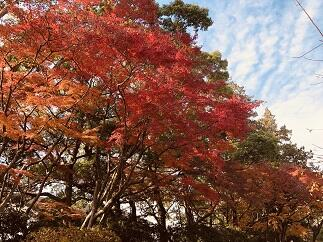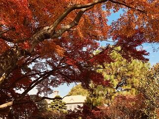本日12月４日から７日までの４日間で第４回の定期考査が行われます。気温の変化や天候不順により体調を崩しやすい時期です。まずは、健康管理をしっかりして普段の実力を発揮できるようにしましょう。頑張ってください。(写真は晩秋の木々)
卒業演奏会


 本日、昼休みの時間を利用して３年生の音楽Ⅲ受講者４名による演奏会が音楽室で行われました。その素晴らしい演奏に心洗われ癒されました。この授業を受講していないと聞くことができない演奏を、こうして多くの先生方、生徒たちに聞く機会を作っていただいたことに感謝いたします。ありがとうございました。
本日、昼休みの時間を利用して３年生の音楽Ⅲ受講者４名による演奏会が音楽室で行われました。その素晴らしい演奏に心洗われ癒されました。この授業を受講していないと聞くことができない演奏を、こうして多くの先生方、生徒たちに聞く機会を作っていただいたことに感謝いたします。ありがとうございました。 霜月から師走へ
 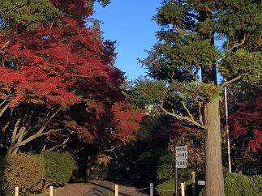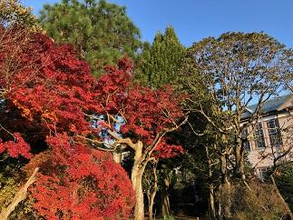霜月から師走へ、今年度も残り４カ月となりました。この８カ月を皆さんはどの様に振り返りますか。皆さんが今まで大切に育んできたものに、そろそろ花を咲かせ実を結ばせる大切な時期になって来ました。まずは、必ず来る好機をいつでも活用できるよう、これまで以上に、健康に気を付けるとともに、日ごろの力を十二分に発揮する準備をしておきましょう。
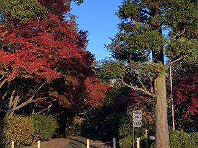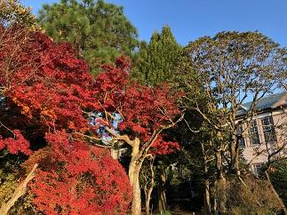霜月から師走へ、今年度も残り４カ月となりました。この８カ月を皆さんはどの様に振り返りますか。皆さんが今まで大切に育んできたものに、そろそろ花を咲かせ実を結ばせる大切な時期になって来ました。まずは、必ず来る好機をいつでも活用できるよう、これまで以上に、健康に気を付けるとともに、日ごろの力を十二分に発揮する準備をしておきましょう。 環境整備
本校の第2グランド脇の通学路（京成佐倉駅から学校までの通学路）について、通学路に掛かっていた樹木の剪定と、雨がひどいときに第2グランドの土砂が流出しないようにする対策の一環として、土嚢をフェンス下に並べるなどの作業が一段落しました。お陰様で、枝落ち防止や視界確保による通学路の安全確保等に役立つとともに地域の景観の確保にも役立っています。千葉県教育庁関係部局のご尽力に感謝申し上げます。ありがとうございました。

 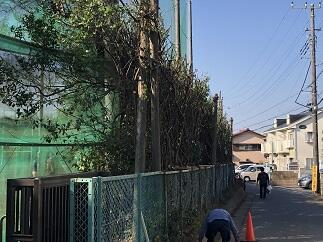
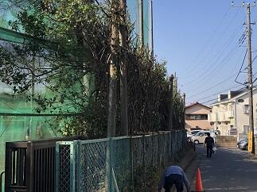
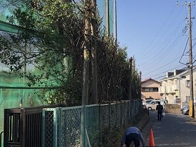 季節を感じるもの
気象庁によると、今年は暖冬だそうで、関東では木枯らし1号が吹かない年となりそうです。（10月半ばの晩秋（ばんしゅう）から11月末の初冬（しょとう）の間に、初めて吹く毎秒8メートル以上の北よりの風のことです。 気象庁では、東京地方と近畿地方でこのような冬になったことを感じさせるような風が吹いたとき、「木枯らし１号」のお知らせを発表しているようです。）
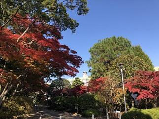
昨日も、思いのほか暖かくなりました。


体育の授業では持久走が始まりました。
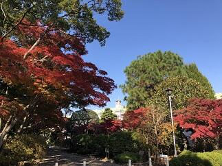
昨日も、思いのほか暖かくなりました。
体育の授業では持久走が始まりました。
ダンス同好会（クリスマス公演）
ダンス同好会が、本日昼休み、中庭で、クリスマス公演を行いました。ダンス同好会は季節の折々に公演をしてくれて、多くの生徒達が楽しみにしています。
 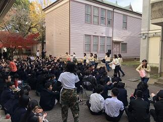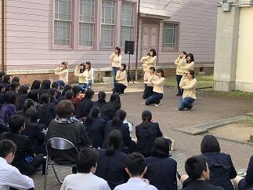
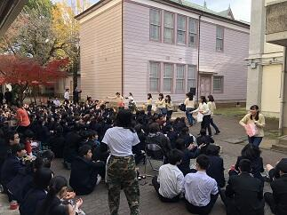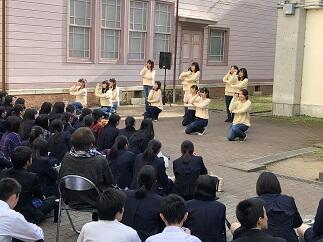 オーディエンスと一体になったパフォーマンスは、いつ見てもすばらしいです。日頃の練習の成果が十分に発揮されていました。
オーディエンスと一体になったパフォーマンスは、いつ見てもすばらしいです。日頃の練習の成果が十分に発揮されていました。
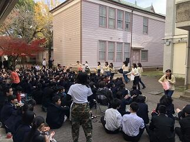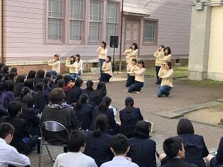オーディエンスと一体になったパフォーマンスは、いつ見てもすばらしいです。日頃の練習の成果が十分に発揮されていました。